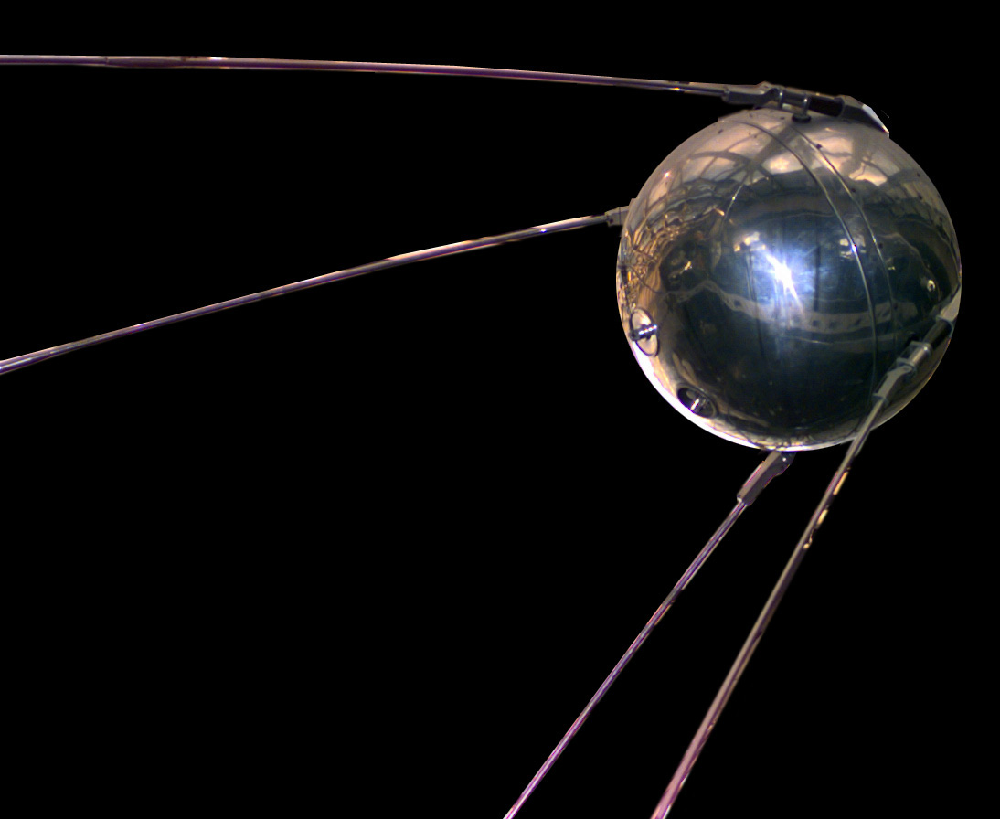
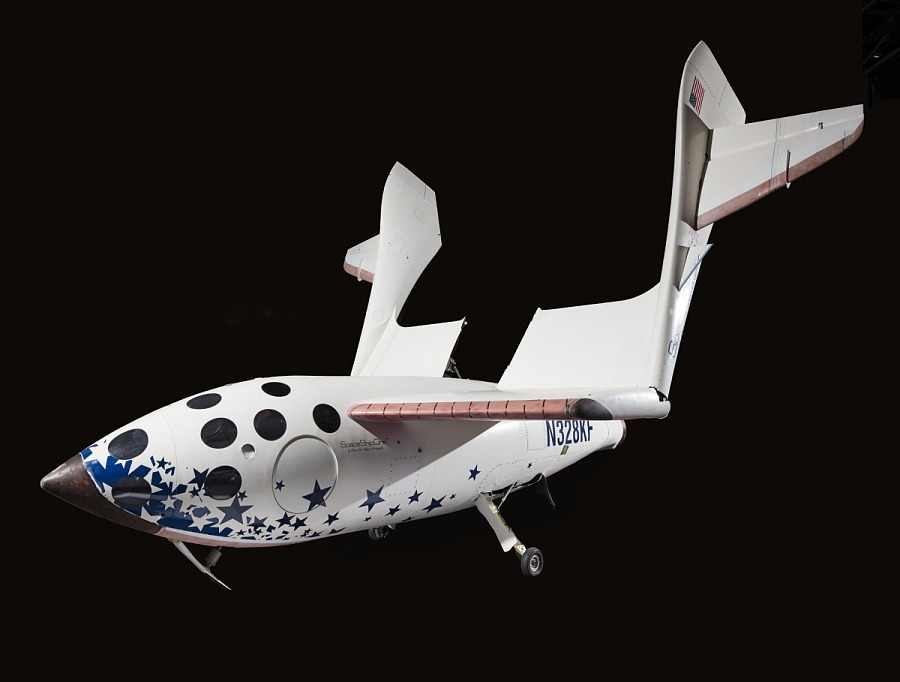

Az űrkutatás
Az űrkutatás a tudományos és technológiai tevékenységek összessége, amelyek célja az űrben végbemenő jelenségek megértése, valamint az űrben való felfedezések és alkalmazások elősegítése. Az űrkutatás magában foglalja az űrhajók és műholdak fejlesztését, valamint a különböző tudományágak, mint a csillagászat, a planetológia, a kozmológia, a fizikája, és az élet tudományok alkalmazását annak érdekében, hogy új ismereteket szerezzünk az űrről és annak hatásairól.
Története
Korai felfedezések
Az űrkutatás kezdetei a csillagászat tudományához köthetők, amely már évezredek óta az emberiség érdeklődésének középpontjában áll. A csillagászat története a babiloni, egyiptomi és görög civilizációkig nyúlik vissza, de a modern űrkutatás alapjai a 20. század közepén, a rakétatechnológia fejlődésével kezdődtek.
A rakétatechnológia előfutárai
A 20. század elején kezdtek el komolyabban foglalkozni a rakéták fejlesztésével, amely lehetővé tette az űrbe való eljutást. A legfontosabb mérföldkő ebben a folyamatban Wernher von Braun és más tudósok munkája volt, akik a második világháború alatt a V-2 rakéták fejlesztésével hozzájárultak a későbbi űrkutatáshoz.
A hidegháború és az űrverseny
1957. október 4. – A Szovjetunió elindítja az első mesterséges műholdat, a Szputnyik-1-et, amely történelmi pillanatokként jegyződik, mivel ez volt az első sikeres rakétakísérlet, amely elérte a Föld légkörén kívüli űrt.
1961. április 12. – A Szovjetunió űrhajósa, Yuri Gagarin az első ember, aki sikeresen körbeutazza a Földet a Vostok-1 űrhajóval. Ezzel a történelmi eseménnyel a Szovjetunió újabb mérföldkövet ért el az űrkutatás terén.
1969. július 20. – Az Egyesült Államok eléri a legnagyobb mérföldkövet az űrversenyben: az Apollo-11 küldetés során Neil Armstrong és Buzz Aldrin az első emberek, akik a Holdra léptek, ezáltal megvalósítva az emberi űrutazás eddigi legnagyobb célját.
Szputnyik-1
A Szputnyik-1 volt az első ember alkotta műhold, amelyet a Szovjetunió indított 1957. október 4-én. A 58 cm átmérőjű, gömb alakú műhold négy antennával sugározta rádiójeleit a Földre, bizonyítva, hogy mesterséges objektum keringhet bolygónk körül. A siker hatalmas politikai és tudományos hatással járt, elindítva az űrversenyt a Szovjetunió és az Egyesült Államok között. A műhold mindössze 21 napig sugározta jeleit, majd 92 nap után visszatért a Föld légkörébe és elégett.

SpaceShipOne
A SpaceShipOne az első magánfinanszírozású, ember vezette űrrepülőgép volt, amely 2004-ben elérte a világűr határát. A Scaled Composites fejlesztette Burt Rutan vezetésével, és megnyerte az Ansari X Prize versenyt. A jármű egy hordozórepülőgépről indult, majd saját rakétahajtóművével emelkedett 100 km fölé. Innovatív „tollas” fékezőrendszere biztonságos visszatérést tett lehetővé, és a projekt megalapozta a későbbi űrturizmus fejlesztését.
